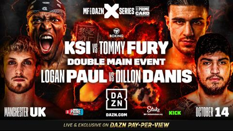
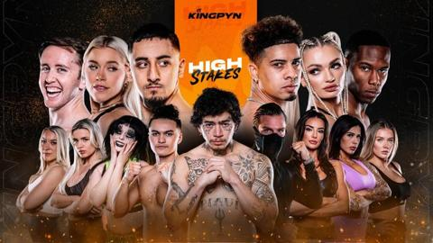
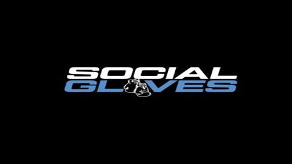
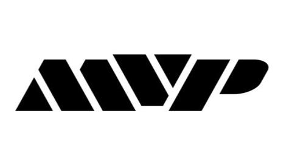

Misfits boxing is an influencer boxing promotion company founded by youtuber KSI in partnership with Kalle & Nisse Sauerland, a well known boxing promotion duo, and then partnered with DZAN for a 5 year exclusivity deal even before their first event. Their first event Misfits 001 was done on the 27th of August 2022 bringing in many viewers to the platform, and though there have been controversies surrounding the company it has consistently held influencer boxing events with some not gaining as much viewership as others they have been consistent and are the most notorious promotion company.

Kingpyn Boxing was a short-lived but ambitious influencer boxing promotion that aimed to bring a tournament-style format to the scene. It gained attention for its High Stakes Tournament in 2023, which featured male and female influencers competing in a knockout-style competition. The promotion showcased notable fighters like AnEsonGib, Whindersson Nunes, and Elle Brooke.
Despite a promising start, Kingpyn faced financial difficulties, leading to its collapse before the tournament's final round. The company went into administration, leaving fighters unpaid and the event unfinished. Its downfall highlighted the volatility of influencer boxing promotions and the risks involved in independent event management.

Social Gloves is an influencer boxing promotion company owned by youtuber Austin Mcbroom. This company hosted its first event on the 12th of June 2021 and it generated a lot of buzz on social media with all the viewers talking about parts of the event such as some shocking wins and unjust losses which brought many eyes to the platform. After all this major controversy hit the promotion as some of the fighters from the first event came out saying they never got paid for their fights which exposed that the company was in financial struggle after overspending on unnecessary things for the event such as rap performances from high profile Celebrities. But they were still able to host one other show where their financial struggle was evident and after that no other shows have been hosted.

Most Valuable Promotions (MVP) is a boxing promotion company founded in 2021 by YouTuber-turned-boxer Jake Paul and former UFC executive Nakisa Bidarian. Created to disrupt the traditional boxing industry, MVP aims to empower fighters through fairer contracts, greater exposure, and innovative marketing strategies rooted in social media and influencer culture. The company quickly gained attention by blending mainstream boxing with crossover appeal, attracting both traditional fans and a younger digital audience.
MVP’s roster includes high-profile names like Jake Paul himself, 7-division world champion Amanda Serrano, and rising star Shadasia Green. The promotion has been behind several major events, including Jake Paul’s bouts with Tyron Woodley and Anderson Silva, as well as co-promoting the historic Amanda Serrano vs. Katie Taylor fight. With its emphasis on fighter-first business practices and pay-per-view-driven events, MVP is redefining how boxing promotions operate in the modern era.
Creator Clash is a charity-driven influencer boxing event founded by YouTuber iDubbbz in 2022. Unlike other influencer boxing promotions that focus on drama and rivalries, Creator Clash emphasizes sportsmanship, entertainment, and fundraising for charity. The event features a mix of YouTubers, streamers, and content creators, many of whom have little to no prior boxing experience.
The first event in 2022 was a massive success, raising over $1.3 million for charity and receiving praise for its professionalism and unique matchups. Creator Clash 2 followed in 2023 with a larger venue and more diverse roster. While generally well-received, it faced some controversy, including the cancellation of Froggy Fresh’s fight due to disagreements with the organizers. Despite this, Creator Clash remains one of the most respected influencer boxing events, focusing on fun, skill development, and philanthropy.